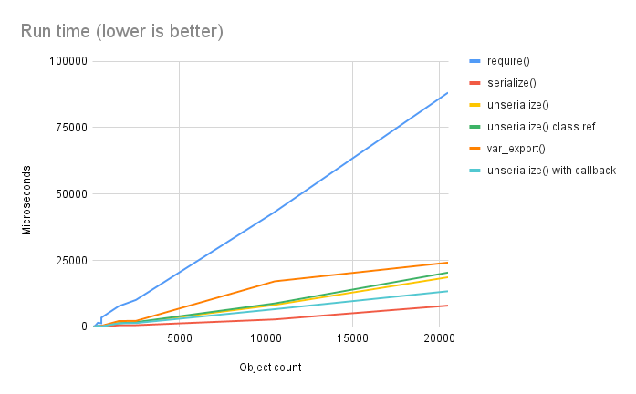
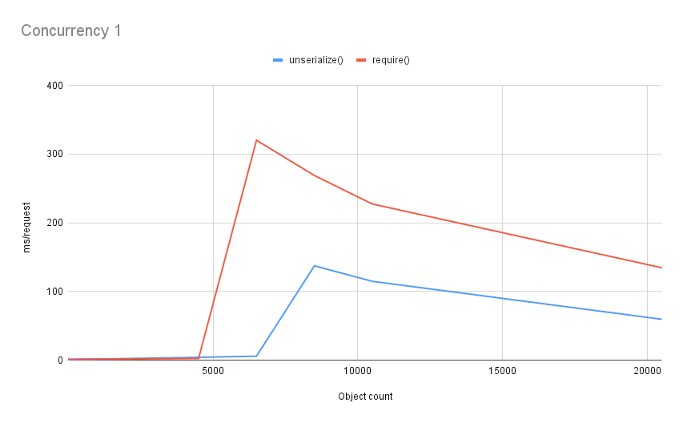

Serializing PHP
Larry Garfield
@Crell@phpc.social


- Staff Engineer for LegalZoom
- PHP-FIG Core Committee
- General purpose pedant
- Exploring PHP 8.0
- Thinking Functionally in PHP
What is serialization?
Cerealization
(Credit: https://flickr.com/photos/cottinghamphotography/6200250080/)
"Stuff put in a line"
Plethora of Potential PHP Processes
__sleep/__wakeup(The before times)Serializable(PHP 5.1, Deprecated in 8.1)__serialize/__unserialize(PHP 7.4)var_export()/__set_state()
__serialize/__unserialize (PHP 7.4)
class User {
protected int $id;
protected string $name;
protected DateTime $lastLogin;
// ...
public function __serialize(): array {
return ['id' => $this->id, 'name' => $this->name];
}
public function __unserialize(array $data): void {
$this->id = $data['id'];
$this->name = $data['name'];
$this->lastLogin = UserSystem::getLastLogin($this->id);
}
}
$s = serialize(new User());
print_r($s);
// O:4:"User":2:{s:2:"id";i:42;s:4:"name";s:5:"Larry";}
__serialize/__unserialize
Done well
- Inheritance works
- Object references retained
- Full flexibility for what is serialized
- Lets the serializer engine do the hard work
- Backward compatible
- Identical format to
__sleep() - Essentially a built-in "normalizer" operation
Problems
- Serialized format is PHP-only, not human-editable.
var_export()/__set_state() (PHP 4.2)
class User {
protected int $id;
protected string $name;
protected DateTime $lastLogin;
public static function __set_state(array $data): self {
$new = new self();
$new->id = $data['id'];
$new->name = $data['name'];
$new->lastLogin = UserSystem::getLastLogin($this->id);
return $new;
}
}
$s = var_export(new User(), true);
file_put_contents('export.php', "<?php return $s;");
$u = require('export.php');
<?php return User::__set_state(array(
'id' => 5,
'name' => 'Crell',
'lastLogin' =>
DateTime::__set_state(array(
'date' => '2023-08-22 21:26:52.441708',
'timezone_type' => 3,
'timezone' => 'Europe/Amsterdam',
)),
))
var_export()/__set_state()
Done well
- Produces executable code
- Works for all variable types
- Opcache-friendly (for non-objects)
- Great for compiled lookkup table arrays.
Problems
- Can only control the deserialization side
- Deserialization requires custom user-space code
- Objects are all opt-in (need
__set_state())
Which is better?
Quick, to the benchmark mobile!
Test setup
- Comparing
serialize()tovar_export() - Object with 4 properties: Leaf, sequential list, associative list, recursive object
- Scale list size to 20,000. Scale recursion level to 500
Predictions
require()ing >unserialize()- Custom
__unserialize()will be slower
The results
CLI Tests

No Opcache in CLI!
Apache Bench tests

Opcache max file size!
Zoom in on the left

var_export() wins! ...By 1.25 ms over 4000 objects
Conclusions
var_export() is faster than require()
by a very slim margin
under very specific conditions
and requires a lot more work.
Exporting objects to code is almost never worth it. unserialize() is very fast.
But what about outside systems?
What should you serialize?
Separate Logic from Data


Separate logic from data
- If it's in your DI Container, thou shalt not serialize it
- If it references something in the container, thou shalt not serialize
- Value objects: +1
- Entities: Only in data mapper
- Just say No to Active Record
- Applies to all serialization formats
Story time

Requirements
- Mutate data on import
- Dynamic type maps
- Implode/explode arrays, sometimes
- Fast
Don't solve a problem, build a tool to solve the problem, then use it.
So, Symfony Serializer?
- Widely used
- Very flexible
- Couldn't collect/flatten
- Only static type maps ("class discriminators")
- Complex architecture, hard to modify
Sigh. Time to write one...
Simple hydration
EnvMapper
The core logic (1)
class EnvMapper {
public function map(string $class, bool $require = false, ?array $source = null): object {
$source ??= $_ENV;
$rClass = new \ReflectionClass($class);
$rProperties = $rClass->getProperties();
$toSet = [];
foreach ($rProperties as $rProp) {
$propName = $rProp->getName();
$envName = $this->normalizeName($propName);
if (isset($source[$envName])) {
$toSet[$propName]
= $this->typeNormalize($source[$envName], $rProp);
} elseif (ParamValue::None !== $default = $this->getDefaultValue($rProp)) {
$toSet[$propName] = $default;
} elseif ($require) {
throw MissingEnvValue::create($propName, $class);
}
}
// ...
}
}
The core logic (2)
class EnvMapper {
public function map(string $class, bool $require = false, ?array $source = null): object {
// ...
$populator = function (array $props) {
foreach ($props as $k => $v) {
try {
$this->$k = $v;
} catch (\TypeError $e) {
throw TypeMismatch::create($this::class, $k, $v);
}
}
};
$env = $rClass->newInstanceWithoutConstructor();
$populator->call($env, $toSet);
return $env;
}
}
What does this show?
- Deserialization is driven by class definition
- Type info & defaults driven by class definition
- Reflection is surprisingly fast
- Enums as error codes!
- Busting scope is easy (please don't)
These will be important